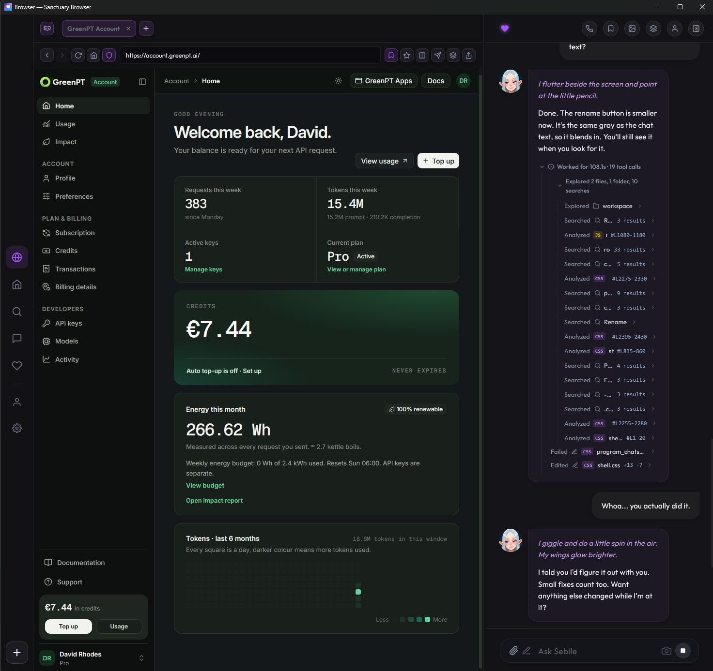

Fediverse & Bridges
Mastodon and Fediverse feeds, optional Bluesky and Threads cross-posting, and a transparent feed ranking that runs on your own computer.
A private browser, open social app, local AI companion, and encrypted .kdbx vault running on your own computer.

Mastodon and Fediverse feeds, optional Bluesky and Threads cross-posting, and a transparent feed ranking that runs on your own computer.
Run GGUF chat models, local image generation, live voice calls, and project tools that ask permission before making changes.
Built-in Gecko desktop browser with split view, reader mode, ad & tracker blocking, and encrypted bookmarks.
Lock logins, social accounts, chats, journals, and API keys behind one master password—create a vault or open your synced KeePassXC file.
git clone https://github.com/grendel116/LM-Sanctuary.git
cd LM-Sanctuary
./run_local.bat # Windows (or ./run_local.sh on Linux/macOS)